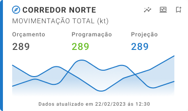
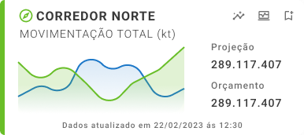
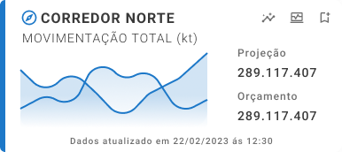
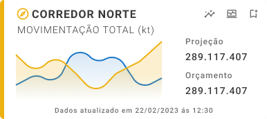
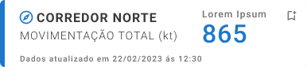
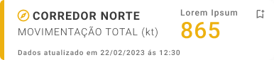

Lighthouse App
Substituindo um sistema legado por um MVP mobile que disponibiliza dados críticos de produção diretamente aos gestores da Vale.
Todos os dados e métricas apresentados são fictícios e utilizados apenas para demonstração. Os valores de impacto e alcance são projeções definidas em conjunto com stakeholders durante a concepção do MVP.
Resultados-chave
Cliente
Vale (Corredor Norte)
Ano
2023
Duração
~6 meses (Discovery + MVP)
Meu papel
Lead Product Designer (end-to-end)
Plataforma
Mobile (iOS / Android)
Stakeholders
Operações, TI e gerência do Corredor Norte
Metodologia
Design Thinking + Ágil + Mobile-first
Entregáveis
pesquisa, Design System, protótipo navegável e handoff
01 · Overview
Overview
Um MVP mobile-first que substitui a intranet legada de monitoramento, disponibilizando dados críticos de produção dos corredores logísticos da Vale diretamente aos gestores, com arquitetura modular pronta para escalar.
O Lighthouse surgiu para resolver um problema real: o sistema legado de monitoramento de produção da Vale, baseado em intranet, não atendia mais às necessidades operacionais. Gerentes dependiam de desktops antigos, com interfaces complexas e sem mobilidade, para tomar decisões em um dos maiores corredores logísticos do país.
Como Lead Product Designer, conduzi o projeto de ponta a ponta: desde o discovery com stakeholders e usuários, passando pela arquitetura de informação e pelo Design System, até o protótipo navegável e o handoff para o desenvolvimento. O MVP foi desenvolvido como piloto no Corredor Norte, com arquitetura modular, pronta para escalar para outros corredores e incorporar funcionalidades futuras, como geolocalização, mapas interativos e upload de mídia.
O objetivo era duplo: reduzir o tempo entre evento e decisão por parte da gerência, e criar um canal único de comunicação entre as equipes de campo e os tomadores de decisão — substituindo fluxos fragmentados entre e-mail, planilhas e telefonemas.


02 · Desafio
Desafio
Substituir um sistema legado restrito ao desktop por uma experiência mobile-first capaz de processar grandes volumes de dados operacionais, respeitar permissões hierárquicas e escalar para múltiplos corredores logísticos.
Antes de iniciar o design, busquei compreender o problema em profundidade. Conduzi uma fase de discovery de aproximadamente 6 semanas, com mais de 12 entrevistas em profundidade com gerentes, analistas de operação e líderes de TI, além de 3 workshops de Design Thinking e sessões de co-criação com o time de produto. O objetivo era mapear tanto as limitações da intranet legada quanto o fluxo real de decisão em campo.
O sistema legado expunha 3 problemas estruturais: (1) falta de mobilidade — gestores só conseguiam acompanhar a operação presos a um desktop, o que em média atrasava a resposta a eventos críticos em várias horas; (2) densidade informacional mal resolvida — dezenas de indicadores concorrendo pela mesma tela, sem hierarquia clara entre o crítico e o informativo; e (3) fragmentação do canal de comunicação — informações espalhadas entre e-mails, planilhas e chamadas telefônicas, gerando ruído e retrabalho entre o campo e a gerência.
O desafio de design era criar uma experiência mobile-first capaz de apresentar grandes volumes de dados operacionais com clareza, respeitar diferentes níveis de permissão e perfis de usuário, e servir como base para uma plataforma escalável para múltiplos corredores logísticos e centenas de usuários. Esse era o problema que o Lighthouse precisava resolver.
03 · Meu Papel
Meu Papel
Liderei o projeto como Product Designer end-to-end, único responsável pelo design — atuando em estratégia, discovery, Design System, fluxos do MVP e handoff para o desenvolvimento.
Atuei como Lead Product Designer end-to-end, sendo o único responsável pelo design do projeto e reportando diretamente à gerência do Corredor Norte e ao PM do produto. Defini a estratégia de design, liderei o discovery, construí o Design System, desenhei os fluxos do MVP e conduzi o handoff ao time de desenvolvimento avançado da Vale.
Além da execução, meu papel envolveu forte articulação entre áreas: conduzi alinhamentos semanais com Operações, TI e gerência, facilitei workshops de priorização e negociei o escopo do MVP diante de conflitos entre prazo, ambição e capacidade do time. Traduzi requisitos técnicos em decisões de design e decisões de design em argumentos de negócio, especialmente ao defender a escolha por uma arquitetura modular, que exigia maior investimento inicial, mas viabilizava escala no médio prazo.
Na liderança de design, organizei o trabalho em 3 frentes paralelas: pesquisa e mapeamento de fluxos, construção do Design System e desenho das telas do MVP. Documentei padrões, critérios de acessibilidade e regras de uso dos componentes em um guia de Design System, servindo como referência para equipes futuras. O objetivo era garantir que futuros designers compreendessem o racional das decisões sem depender de mim.
04 · Solução
Solução
Um aplicativo mobile-first baseado em Design System próprio, com mais de 40 componentes, cards de status em 8 variações e 3 densidades, projetado para reuso, consistência e escala entre corredores.
A solução foi um aplicativo mobile-first, apoiado em um Design System próprio, com mais de 40 componentes organizados em tokens, primitivos e padrões de interface. Todo o sistema foi desenvolvido em Figma, com variantes, auto-layout e estados documentados, garantindo consistência visual e previsibilidade de comportamento em diferentes densidades de tela.
O núcleo da experiência são os cards de status operacional, com 8 variações que abrangem diferentes tipos de dados (produção, alertas, métricas agregadas, indicadores de corredor) e 4 níveis de prioridade (verde, azul, amarelo, vermelho). Cada card foi desenhado em 3 densidades — completa, compacta e ultracompacta — para se adaptar do feed principal até notificações expandidas, mantendo a hierarquia da informação em todos os contextos.
Além dos cards, desenvolvi a camada de navegação, filtros dinâmicos, notificações personalizáveis por área (porto, minas, ferrovias), permissões hierárquicas e um painel consolidado por corredor logístico. O sistema foi projetado para suportar, sem reescrita, funcionalidades previstas em backlog, como comentários, upload de imagens e mapas interativos, reduzindo o custo das próximas iterações.
O resultado é uma arquitetura modular que resolve a densidade informacional do sistema legado e oferece ao time de desenvolvimento uma base reutilizável para novos corredores e funcionalidades. Cada componente foi projetado para reuso, consistência e acessibilidade, decisões que, no médio prazo, reduzem retrabalho, tempo de onboarding de novos designers e o custo total de novas funcionalidades.












05 · Entrega & Impacto
Entrega & Impacto
O MVP foi aprovado por unanimidade no steering committee, com projeção de impacto em ~200 gestores no rollout e ~70% de reuso de componentes, acelerando o time-to-market das próximas funcionalidades.
A entrega final incluiu um protótipo navegável em alta fidelidade, um Design System documentado com guidelines de uso e acessibilidade, fluxos de usuário mapeados e um dossiê de handoff para engenharia, com especificações, tokens e casos de borda. Na apresentação ao steering committee, o MVP recebeu aprovação unânime dos stakeholders de Operações, de TI e da gerência, e foi encaminhado diretamente ao time de desenvolvimento avançado da Vale.
O impacto projetado, alinhado com os stakeholders, inclui o potencial de alcançar ~200 gestores e líderes na fase de rollout do Corredor Norte, com expansão natural para outros corredores logísticos. Estima-se uma redução de 30% a 40% no tempo entre a detecção de eventos críticos e a decisão da gerência, eliminando a dependência do desktop da intranet, além da consolidação de múltiplos canais (e-mail, planilha, telefone) em uma única fonte de verdade operacional.
Do ponto de vista de produto, o Design System entregue tornou-se um ativo reutilizável para os próximos ciclos. A estimativa, feita em conjunto com o time de desenvolvimento, indica que as funcionalidades já mapeadas em backlog (comentários, upload de mídia, mapas interativos) poderão ser construídas reaproveitando ~70% dos componentes existentes, reduzindo significativamente o time-to-market das próximas entregas.

06 · Aprendizados
Aprendizados
Três lições do papel sênior em campo: Design System é uma decisão de negócio, ambiguidade faz parte da liderança e mobilizar pessoas é tão importante quanto mobilizar pixels.
Design System é uma decisão de negócio, não apenas de estética. O principal ganho do projeto foi a base de componentes reutilizáveis, que acelerou os ciclos seguintes. Defender essa escolha no MVP exigiu alinhar linguagem com engenharia e liderança, demonstrando que um investimento inicial maior no sistema reduziria o custo marginal de cada funcionalidade futura.
Ambiguidade faz parte do trabalho sênior. Em um contexto sem métricas prévias do legado e com o MVP como POC, aprendi a construir hipóteses com stakeholders, definir critérios qualitativos de sucesso (aprovação, clareza, confiança dos gestores no protótipo) e documentar premissas para revisão no rollout. Grande parte do papel de Lead é transformar incertezas em acordos explícitos.
Mobilizar pessoas é tão importante quanto mobilizar pixels. O sucesso do MVP se deveu menos à qualidade das telas e mais à consistência dos processos: facilitar workshops, traduzir o contexto de negócio para o time técnico, antecipar riscos com TI e Operações e proteger o escopo contra expansão prematura. Essas competências tornaram-se centrais na minha atuação sênior: garantir a execução, com ou sem autoridade formal.
07 · Galeria
Galeria
Materiais complementares: detalhes do Design System, telas auxiliares e artefatos do processo que não estão no fluxo principal, mas evidenciam o escopo real do projeto.
Esta seção apresenta materiais complementares do projeto, incluindo detalhes de componentes, telas adicionais e materiais de apresentação. Esses artefatos, embora não façam parte do fluxo principal, oferecem uma visão mais ampla do processo de design e da complexidade do projeto.

{kind=link}
{kind=link}
{kind=link}
{kind=link}